A free Diablo 2 Resurrected mod for Reign of the Warlock with a deep endgame - Maps with affixes, the 50-level Hell's Torment, the Rips, Hoardlings, Remnants, Renegades, the Barracks, Paragon past level 125 - and a league where every drop is witnessed and every character checked.
Icechamber bosses. Every Hell's Torment level's Icechamber now holds a big boss of its own, fighting alone: Ender'Aku, Majiko, Raku'Ranth, Kelthir and Grizzlepaw take turns down the levels, and every tenth level holds a greater one - Izual the Forsaken, Ded'Domer, Gurka, Queen Syndred and Anuburak. They are huge,...
All patch notesA whole endgame on top of Diablo II
Everything below is in the game today, and every screenshot is from Heyday itself.
The endgame
Built on D2R Reimagined, with Talonrage's Requiem of Sorrow endgame on top. Every step up is harder - and pays more.
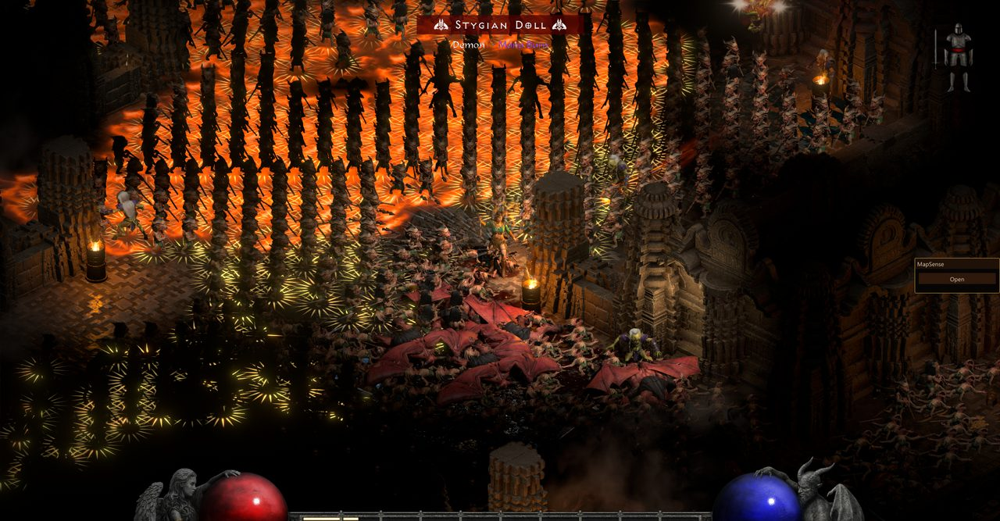
Maps
- Cube a map in Harrogath and a red portal opens to its zone: the Ruined Cathedral or the Chaos Spire, in three tiers.
- Maps come from clearing maps - the same tier from regular monsters, the next tier from champions and uniques - and from Hell's Torment, Hell's terror zones and the rips.
- Every map has a boss at the bottom of its maze: The Abbess in the Cathedral Sanctum, Seal Warden Kaeos on the Spire Throne.
- Maps live in their own Maps tab in the stash and have their own Loot Filter group.
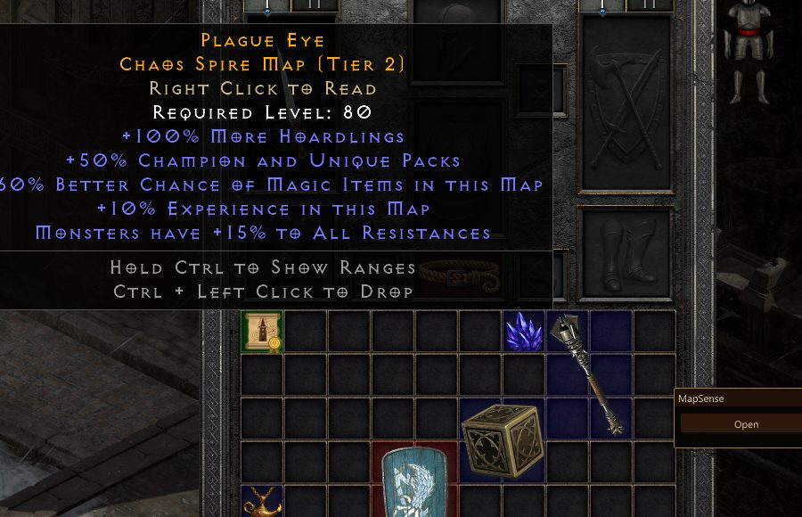
Map affixes
- Every map drops magic or rare, and its affixes change the run you open it for.
- Prefixes make it harder and pay for it: tougher, faster or more resistant monsters, and Teeming and Legion maps with far more monsters and elite packs.
- Suffixes are pure reward: magic find, gold, experience, more Hoardlings (of the Hoard) and more Remnants (of the Fallen).
- A rare map rolls up to three of each. Maps made in the cube roll new affixes.
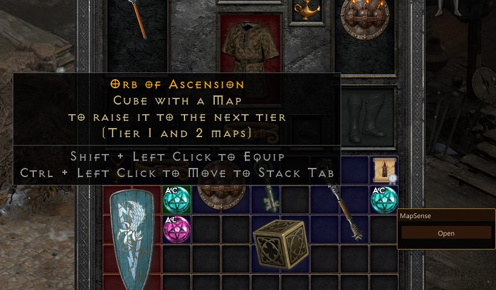
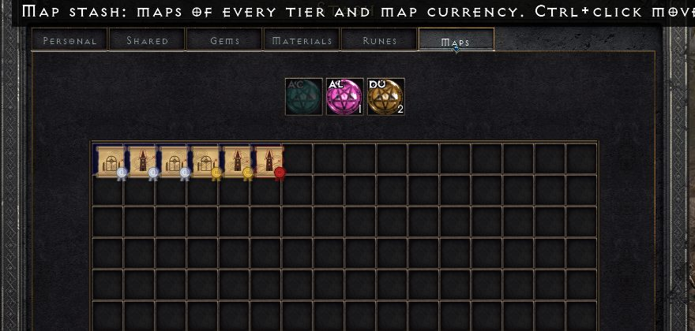
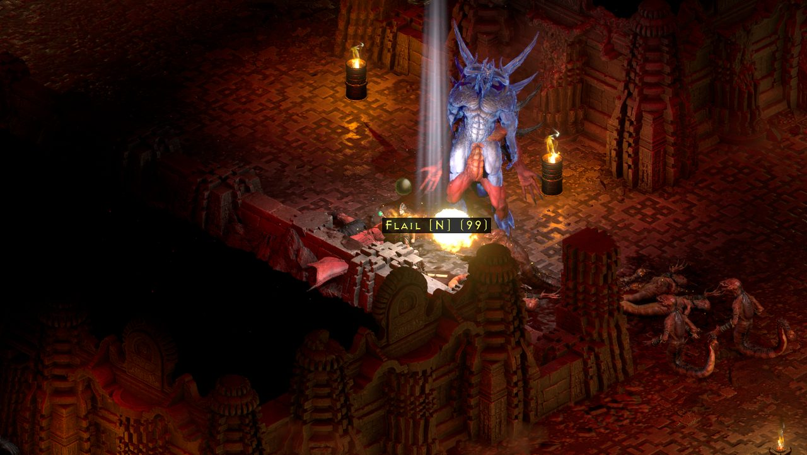
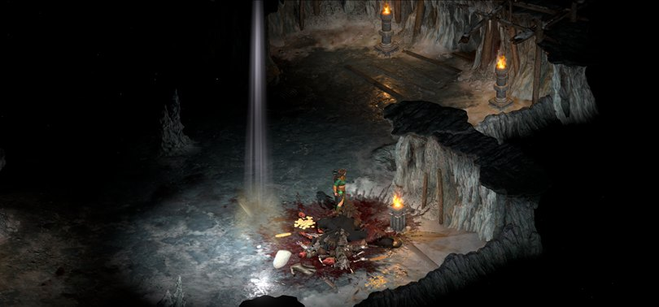
Hell's Torment
- Fifty levels straight down from the Antechamber, always terrorized. The way in: the Hell's Torment Portal Key from the Spirits.
- No checkpoints, and Teleport works the way it does in Duriel's Lair - anywhere you can see, never through a wall.
- The deeper you go, the better the loot: more rune rolls and better odds on elite gear, for regular monsters, champions and uniques alike.
- The Three wait at the bottom.
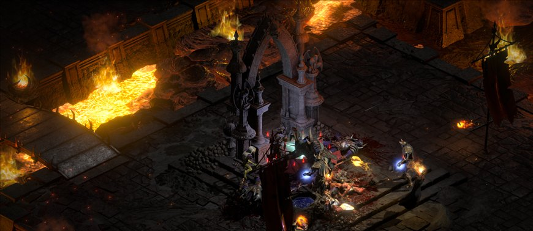
The Rips (Hell 4-8)
- Kill the Guardian Angel at the Arreat Summit in Hell for her key, then cube it with a Tome of Town Portal and a rune to open a rip.
- Five rips that climb in monster level, full of monsters that resist almost everything. Bring your minus-resistance.
- Maps, Loot Bags, Hoardlings, Remnants and Runner Contracts all turn up here too.
Loot worth chasing
New things to find in Hell's Torment, the maps, the rips and Hell's terror zones - each one a reason to keep killing.
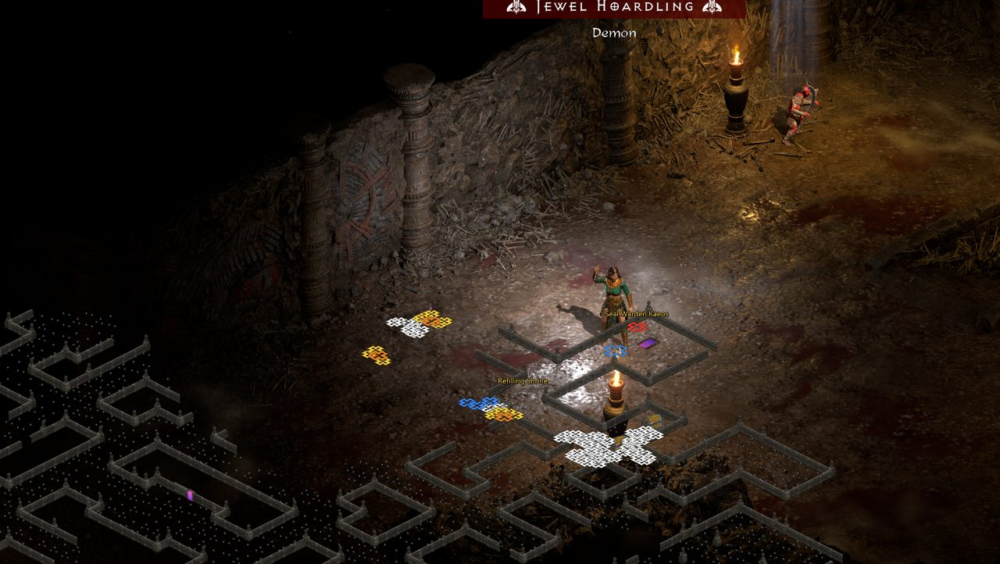
Hoardlings
- Glowing loot thieves. A banner and a coin jingle tell you one is near, and MapSense marks it on the map.
- They don't fight back: they run, blink away when cornered, and drop some loot for every tenth of their life you take. Kill one for the big haul - before it escapes.
- Gilded, Gem, Rune, Bag, Cartographer, Soul, Charm and the rare Jewel Hoardling - each carries its own kind of loot.
- Every map holds one, and they turn up now and then in Hell's Torment, the rips and Hell's terror zones.
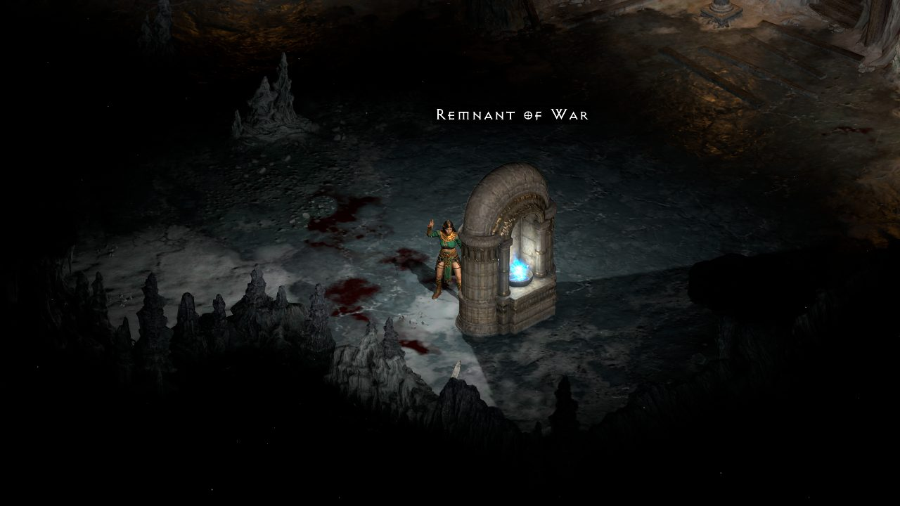
Remnants
- The fallen sometimes leave something behind: a shrine-like stone where the monster died. Touch it to find out what it holds.
- Remnant of Fortune: a magic find or gold find blessing, or loot spilling out - runes, perfect gems, a map unique's haul.
- Remnant of War: a champion rises, a Herald of Terror answers, or the Gauntlet begins - clear its waves in time for every reward at once.
- Remnant of Greed: a Hoardling appears.
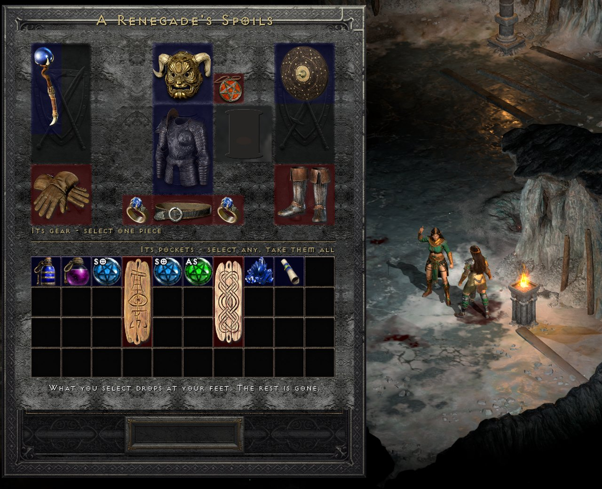
Renegades
- Rival heroes gone bad hunt you: a warning, a heartbeat - and a few seconds later a Renegade arrives. Stand your ground or flee.
- Eight builds, from the Vanguard to the Frost Witch, with real class bodies and weapons, their contract build's skills levelled to match them - the Bonecaller's skeletons and the Shadow's sentries included - and the gear they wear powering them.
- Kill one and its Spoils open: select one piece of its gear - sometimes a runeword, sometimes its own Runner Contract - or its whole pockets of charms, orbs and map finds. It drops at your feet; the rest is gone.
- Hunted and Stalked maps bring more of them; of the Renegade and of the Warlord make them better equipped.
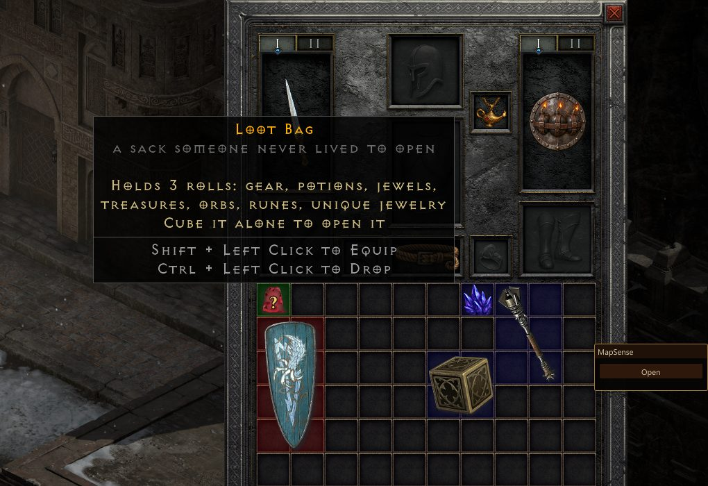
Loot Bags
- Sacks someone never lived to open, dropped in the maps, Hell's Torment and the rips.
- Put one in the cube by itself and press Transmute: three rolls spill at your feet - potions, jewels, orbs, runes, Soul Shards, keys, even a unique ring or amulet.
- Bag Hoardlings carry nothing but Loot Bags.
Terror zones that pay
Hell's terror zones drop maps, and Hoardlings, Remnants and Runner Contracts turn up there at the same odds as in the rips. Hell's Torment, the rips and the maps are always terrorized.
Loot that climbs
Torment pays more the deeper you go and the maps the higher the tier: more rune rolls and better odds on elite gear. A monster can drop far more than D2R's usual cap of six items.
Gambling worth doing
Gambling turns up uniques often enough to be worth the gold - in vanilla it's about one in two thousand.
A stash that keeps up
Advanced stash tabs for gems, materials, runes and maps, with Ctrl+click filing. A Gem Bag and a Keychain stack what would fill a page.
The Barracks
Hire runners to run your maps for you. The Barracks stands in Harrogath's south-east yard, past Anya and the campfire - inside is the War Table.
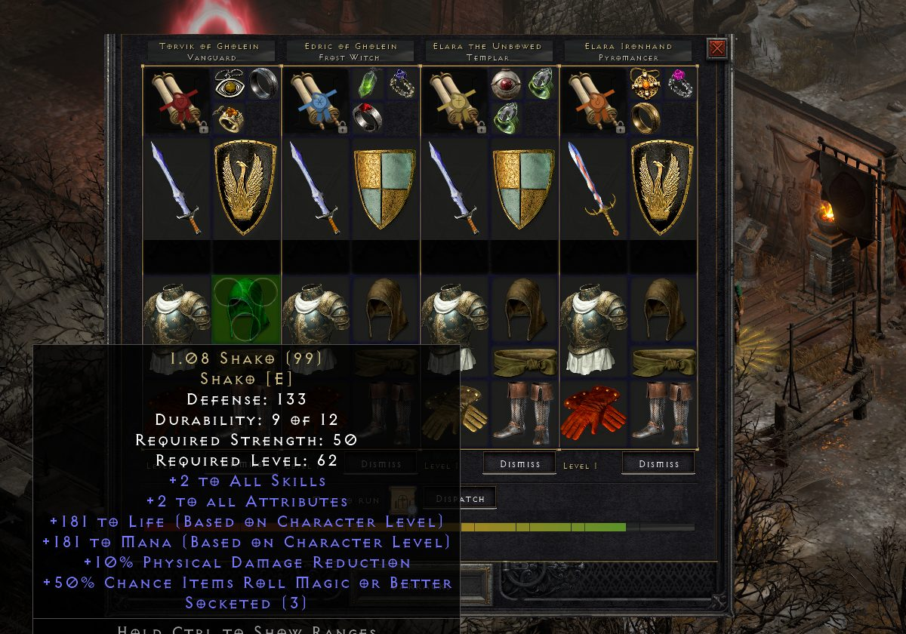
Runner Contracts
- A new drop, about as rare as maps, found where maps drop - and in Hell's terror zones. They glow on the ground.
- Every contract is a runner with a build: the Sellsword, or a class build - Warcry Barbarian, Zealot, Meteor and Blizzard Sorceress, Multishot Amazon, Skeleton Necromancer, Wind Druid, Trap Assassin. Magic and rare contracts roll traits; legendary runners are unique contracts.
- Hire a runner for gold, gear them like a character, put a map on the table and send up to four. The success bar shows the odds.
- A runner who dies is gone with everything they wore. Whatever the map dropped waits in the run's loot tab.
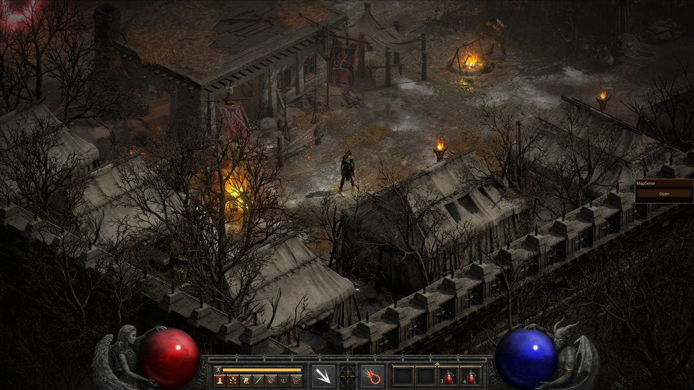
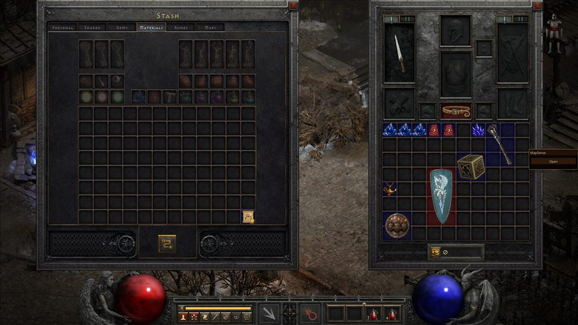
Your character
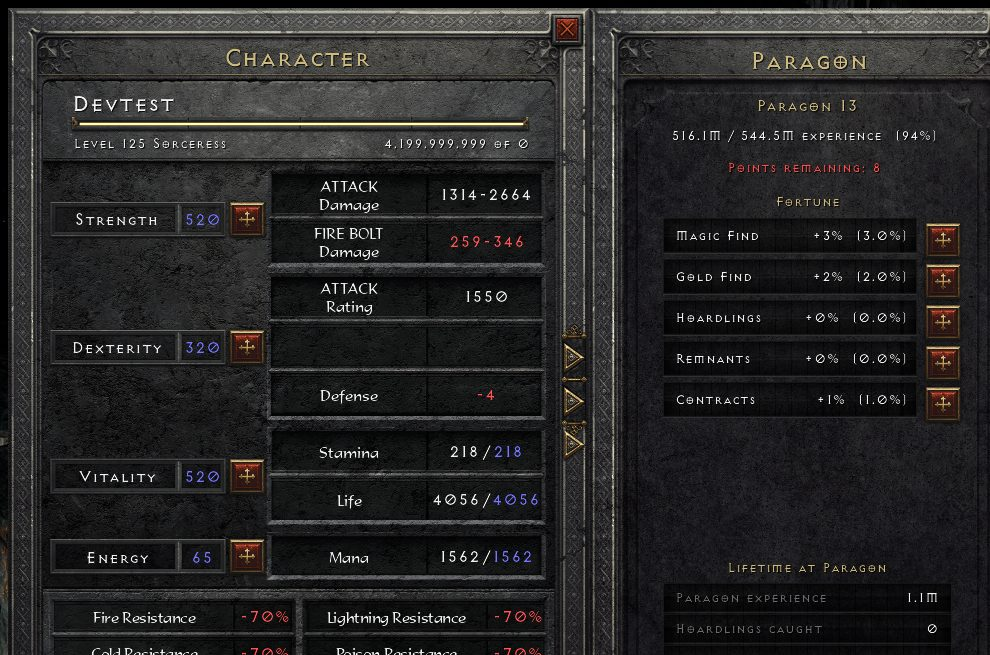
Paragon
- Levelling never stops. At level 125 your experience keeps counting as Paragon experience, forever, and every Paragon level gives a point.
- Fortune only: points go into Magic Find, Gold Find, Hoardling chance, Remnant chance and Contract chance - more loot, never more power.
- No caps, but diminishing returns: the page shows what you put in and what you actually get, plus your lifetime Paragon totals.
- Your Paragon comes with you into other players' games.
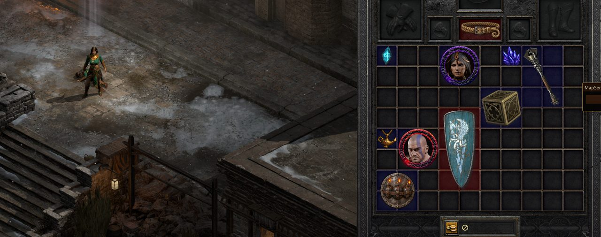
Soul Summons
- Collect Soul Shards from the Spirits, Baal and the Three - or from the Soul Hoardling.
- Forge class tokens at the Beacon of Hope and raise a follower of every class through ten tiers.
- Each tier adds skill levels, and the highest tiers wear unique gear.
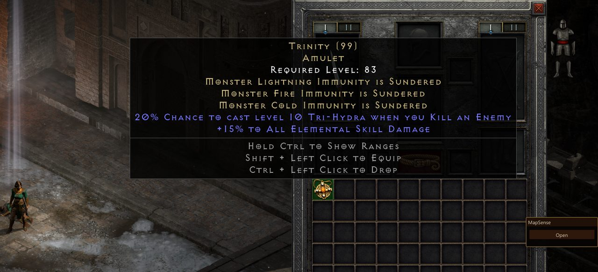
Items
- Legacy realm items: bugged Arkaine's Valor and Stormshield, the Ith Crystal Sword, White Ring and Gloves, Wizzy gear, 1.08 Shakos, hacked amulets.
- New uniques and sets picked from ReMoDDeD for being different - Tri-Hydra on kill, sundering amulets and more.
- Hundreds of uniques, sets, runewords and cube recipes from D2R Reimagined. The item finder filters all of them by slot, stats and where they drop.
Level 125
An experience curve rebuilt for it. 6 stat points per level, 1 skill point per level and 2 on every 5th.
Every class, tuned up
All eight classes, Warlock included. Each class's main mastery scales like the Sorceress's.
Bosses that hold up
Map bosses, the Spirits and the Three are measured in the game itself, and stay whole in full eight-player games.
Every drop witnessed. Every character checked.
Mod leagues usually run on trust: you play offline, and nobody can tell a real Windforce from a spawned one. The Heyday league is built so the server knows. It sees every item fall as it happens and checks every save before it counts. What you find is real, and so is everyone else's.
A vault for your characters
Sign in with Discord in the launcher and play league characters. They live in the league's vault, not on your PC: the launcher hands them to the game when you press Play and returns them when you close it. There's a softcore and a hardcore ladder.
A witness rides along
A league plugin records every item that arrives in your game, with the monster and the drop it came from, plus your kills by area. Each line is signed, so the log can't be edited or trimmed. The server checks every save against it: levels, stats, skills, gold and every item's stats.
Real consequences
An impossible item or save is refused, and the vault keeps your last good copy. A session that fails the checks is rolled back on its own. Old copies can't be restored, so a hardcore death stays dead and a bad trade stays done. Cheating costs the Discord account behind it.
- Sign inwith Discord, in the launcher
- Playyour vault characters, solo or together
- Witnessedevery drop and kill, signed as it happens
- Checkedthe server judges the session
- On the ladderand your best finds in #finds
No game that runs on your own PC can be made hack-proof, and the league doesn't pretend otherwise. It's built so that cheating is hard, visible and reversible, and moderators review everything it flags.
Two ways to play
Single player
Your own characters, played however you like. Play together over TCP/IP - one person hosts, friends join.
The league
Sign in with Discord in the launcher. League characters live in a vault, every drop is witnessed as it happens, and notable finds are posted live in the Discord. Impossible items are refused; spawned items, dupes and rollbacks are flagged and undone.
One launcher does it all
Installs and updates
It finds your game, installs Heyday and D2RLoader, and keeps both - and itself - up to date. Your normal D2R characters are never touched.
League sign-in
Sign in with Discord and press Play League: your vault characters come down, you play, and they go back when you close the game.
Multiplayer
Host or join over TCP/IP from the Multiplayer menu. Hosted games get everything single player has - Hoardlings, Remnants, Loot Bags, map affixes.
Crash reports
When a game crashes, the launcher sends a report by itself (names and paths taken out), so problems get fixed fast. Untick it if you'd rather not.
MapSense
RuffnecKk's map overlay is allowed everywhere, league included, and marks Hoardlings and map bosses. Switch it off in the launcher.
Download
- Own Diablo II: Resurrected with the Reign of the Warlock expansion
Steam or Battle.net, on Windows. The base game alone is not enough - Heyday is built on Reign of the Warlock.
- Get the Heyday launcher
HeydayLauncher.exe - if Windows SmartScreen warns, choose More info then Run anyway.
- Run it
It finds your game and installs Heyday plus D2RLoader, the community mod loader Heyday runs on (it also adds the Multiplayer menu). The launcher downloads the exact D2RLoader version Heyday is tested with from d2rloader.net, checks it, and keeps everything - itself included - up to date. Your normal D2R characters are never touched.
- Play
Single player straight away, or sign in with Discord and press Play League.
If Windows Security flags D2RLoader as "potentially unwanted" - common for mod loaders, which hook into the game - the launcher explains how to allow it; it's your choice. Never use any mod on Battle.net - modded play on Blizzard's servers breaks their terms. Heyday always starts offline.
Questions
What is Heyday?
Heyday is a free Diablo 2 Resurrected (D2R) mod - an overhaul built on D2R Reimagined for Reign of the Warlock. It adds Maps with affixes, the 50-level Hell's Torment, the Rips, level 125 and Paragon, the Barracks, legacy realm items, Soul Summons followers, Hoardlings, Remnants, Loot Bags and an online league. Play it single player, multiplayer with friends, or in the league.
How do I install the mod?
Download the Heyday launcher and run it. It installs Heyday and D2RLoader next to your Diablo II: Resurrected, keeps both up to date and starts the game - no copying files by hand.
Does it work with the Steam and Battle.net versions of D2R?
Yes - Heyday runs on both. You need Diablo II: Resurrected with the Reign of the Warlock expansion.
Is it free?
Yes, completely - Heyday is non-commercial. You only need your own copy of D2R with Reign of the Warlock.
Will it touch my normal D2R characters?
No. Heyday keeps its own saves, and league and single-player characters are kept apart too.
Is the map overlay allowed?
Yes - RuffnecKk's MapSense is allowed everywhere, including the league, and can be switched off in the launcher.
How do I play with friends?
Pick an offline character and press Multiplayer next to Play. Host a Public game (listed in the game browser), an Unlisted one (share its Game ID) or a LAN game; friends join from Browse Games or with the Game ID. Hosting uses TCP port 4000 - D2RLoader sets it up automatically and shows whether others can reach you; some routers need the port forwarded by hand. Everyone needs the same Heyday and D2RLoader version, which the launcher keeps matched. The Discord has a channel for finding games.
Where do I look things up?
The wiki has every unique, set, runeword, cube recipe, skill and boss loot table, plus the in-game guide. The item finder filters every item by slot, quality, level, stats and where it drops.
Found a bug?
Post it in #bug-reports on the Discord.
Credits. Heyday stands on the work of the D2R Reimagined team (base mod), Talonrage (Requiem of Sorrow), locbones and the ReMoDDeD team (Soul Summons), the D2RLoader team, RuffnecKk (MapSense), MindH1ve (Buff HUD) and SirCabby (D2RCabbyCodes). Maps design inspired by Path of Exile 2 and Project Diablo 2.